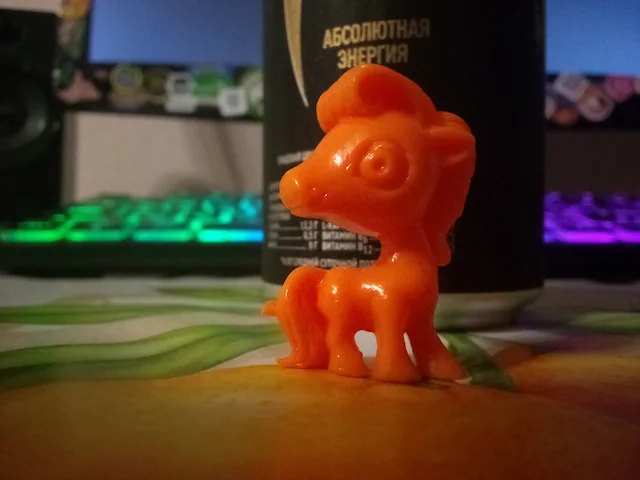

Раскидал ресы по папкам с подходящими именами - старые бесили. Палитры починил, но дизеринг поломал. Реал-работа схавала меня - пахаю на дядю днями и ночами, у него скоро релиз. Руки чешутся поменять YAML на JSON, этим и займусь.
>> См. видос с процессом разработки <<
20.09.2026: Скрипт из файла перекидывает в менюшку теста графики.
Почему меняю YAML на JSON
YAML-скрипт мне очень нравится, но черепахи делающие yaml-cpp библиотеку умудряются мариновать её в бете дольше, чем вносят нововведения стандарта C++ в компиляторы. Мне ещё и пришлось фиксить вылеты при чтении флоатов. То что нельзя было удалить ноды, так эт ваще пиздец. Короч, мне лишняя ёбка ненужна, поставлю либу Нлохмана про JSON, там даже бинарный BSON/CBOR встроен бонусом. Теперь уже прошли времена, когда мне надо лазить в конфиги и чё-то там читать/писать - всё уже редакторы сами генерируют и ошибок они не делают. Если игрокам и придётся править конфиги, то от джсона они не помрут.
